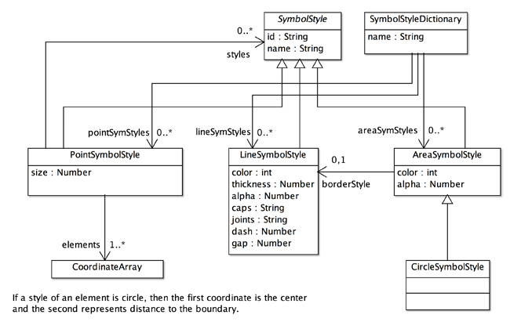
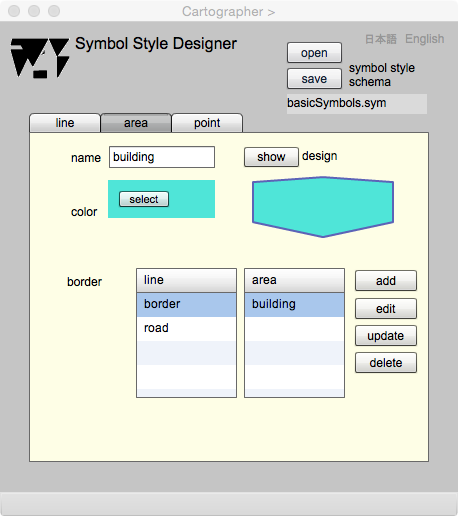

Symbol Style Designer
記号スタイルのデザイン
記号とは，地図を図示するときに使用される，実世界の地物の表現のことです．記号は，個別の記号をデザインするための記号スタイルスキーマに準拠して作成します．地図は２次元の平面なので，記号は，点，線，面に分類できます．記号スタイルスキーマは，点，線，面それぞれがどのような表示用属性をもつか，また，互いにどのような関係があるかを示します．ここでは，まず記号スタイルスキーマについて説明し，記号の設計手順を示し，最後に具体的な操作方法を解説します．
記号スタイルスキーマ

図１．gittok の記号スタイルスキーマ
SymbolStyleDictionary
記号スタイル辞書は，点，線そして面を表現する記号の定義の集りです．名前 (name) をもつとともに，点，線，そして面の記号の集りであるpointSym, lineSym, areaSymと関連します．
SymbolStyle
記号スタイルクラスは名前 (name) をもちますが，記号のルートクラスで抽象クラスです．ただし，pintSymbolStyleから参照されます．点記号はこの参照によって，他の線，面記号をもつことができます．これによって，複雑な形状の点記号をデザインすることが可能になります．
PointSymbolStyle
点記号スタイルは，それぞれが線，面の記号定義に対応づけられる，複数の座標列 (elements) で構成されます．面記号の定義と対応する座標列は，最後の点は始点に結ばれ，内部は面記号の定義に従って塗りつぶされます．なお，このクラス図では，点記号は他の点記号を参照できますが，gittokでは現状，それはできません．
LineSymbolStyle
線記号スタイルは，色(color)，太さ(thickness)，透明度 (alpha)，端点形状 (caps)，頂点形状 (joints)，点線の場合は実線部の長さ (dash)，空白部の長さ (gap)で定義します．
AreaSymbolStyle
面記号スタイルは，面を塗りつぶす色 (color)，透明度 (alpha)，面が円形かどうか (isCircle)， そして領域の境界を示す線記号 (borderStyle) で定義します．
操作画面
下に示す図２を参照のこと．
表示欄
symbol style schema
記号スタイルスキーマがオープンまたはセーブされると，ここにファイル名が表示されます．
ボタン
open
記号スタイルスキーマをオープンします．
save
記号スタイルスキーマをセーブします．
日本語
今あなたが読んでいるドキュメントが表示されます．
English
You can read the tutorial written in English
Line
図２．Symbol Designer: line
表示欄
name (編集可能)
線記号の名前を記入します．
thickness (編集可能)
線の太さを記入します．
dash (編集可能)
点線を定義するとき，実線部の長さを記入します．単位はピクセルです．
gap (編集可能)
点線を
定義するとき，空白部の長さを記入します．単位はピクセルです．
line
登録された線記号の一覧です．
ボタン
show
線記号のデザインが確認できます．
color
線記号の色を指定できます．
caps
線記号の端点の形状をnone, round, square の中から選択できます．

joints
線記号の折れ線頂点の形状をmiter, round, bevel の中から選択できます．

add
線記号を追加します．
edit
席号の属性を編集します．
update
編集結果で記号を更新します．
delteline
一覧から線記号を削除します．
Area

図３．Synbol Designer: area
表示欄
name (編集可能)
面記号スタイルの名前を記入します．
pattern
面の内部を塗る画像の名前が表示されます．
line
面の境界の表示に使う線記号スタイルの名前が一覧表示されます．面記号スタイルを定義するときは，線記号スタイルを選択しなければいけません．
area
登録された面記号スタイルの名前が一覧表示されます．編集，更新，削除するときは，この一覧の中から面記号スタイルを選択します．
design
編集された面記号スタイルが表示されます．
ボタン
open
面を塗りつぶすパターンの画像ファイルをオープンします．
clear
面を塗りつぶす画像を未定義状態にクリアします．
add
面記号スタイルをarea一覧に追加します．
edit
面記号スタイルの編集が行えるようにします．
update
編集した結果を登録します．
delete
area一覧に登録されている面記号スタイルを削除します．
show
このボタンを押すと，編集した面記号スタイルをテスト表示します．
Point

図４．Symbol Designer . point
表示欄
name（編集可能）
ポイントシンボルの名前をここに記入します．
mode
下にある編集用のパネルでデジタイズできるときは，表示がdigitizeになります．また，検索ができるときは，searchになります．それぞれの作業が終わったときにbreakボタンを押すと，モードが切り替わります．
size（編集可能）
点記号の，画面上のサイズ（幅と高さは同じと考える）を指定します．デフォルトは100pixelです．
Edit Panel（編集可能）
点記号を編集するためのパネルです．ラジオボタンで，線，面，円のどれかを選択すると，それぞれ，線記号スタイル，面記号スタイル（円の場合もスタイルは面）の一覧が表示されるので，スタイルを選択します．そして，このパネルの上でカーソルをクリックすることによって，線や面の形状を描くことができます．円の場合は，中心と円の境界位置（つまり半径）を指定すると，円が描けます．一つの図形を描いたら，breakボタンを押します．以上の操作は何回も続けることができます．図形の形が気に入らない場合は，searchボタンをおして，カーソルを該当する図形の上（円の場合は境界）でクリックします．すると，線が太くなり，選択されたことが分かりますので，deleteボタンを押すと，その図形は削除されます．
line style
デジタイズする線のスタイルの一覧が表示されます．
area style
デジタイズする面又は円のスタイルの一覧が表示されます．上の図には見えないですが，ラジオボタンでareaまたはcircleを選択すると，一覧が現れます．
point
点記号スタイルの名前の一覧がここに表示されます．編集したり，削除したりするときは，事前にこの中から該当するものを選択してきます．
ボタン
line
このラジオボタンを押すと，右側に線記号スタイルの一覧が現れます．その中から適当なものを選ぶと，そのスタイルで線（折れ線）のデジタイズができます．
area
このラジオボタンを押すと，右側に面記号スタイルの一覧が現れます．その中から適当なものを選ぶと，そのスタイルで面（多角形）のデジタイズができます．
circle
このラジオボタンを押すと，右側に面記号スタイルの一覧が現れます．その中から適当なものを選ぶと，そのスタイルで円のデジタイズができます（中心と境界の位置を指定）．
break
デジタイズの区切り，または検索の終了時にこのボタンを押します．
search
デジタイズモードからサーチモードに変更するときに，このボタンを押します．
delete
サーチされた図形を消去するときに，このボタンを押します．
clear all
デジタイズした図形全部を消去するときに，このボタンを押します．
add
デジタイズした点記号スタイルをpointリストに追加するときに，このボタンを押します．
edit
pointリスト上で選択した点記号スタイルを編集したいときに，このボタンを押します．
update
編集した結果を使って，スタイルを更新するときに，このボタンを押します．
delete
pointリスト上で選択したスタイルを削除するときに，このボタンを押します．